Natural Language Processing (NLP) is the interdisciplinary field that develops computational methods to process, analyze, understand, and generate human language:
Using computers to study human language, e.g. measuring language change over time, detecting dialectal variation, evaluating grammatical theories, etc.
Enabling computers to deal with language, e.g. computer translation, summarization, information extraction, comment moderation, etc.
Collecting en-core-web-sm==3.8.0
Downloading https://github.com/explosion/spacy-models/releases/download/en_core_web_sm-3.8.0/en_core_web_sm-3.8.0-py3-none-any.whl (12.8 MB)
━━━━━━━━━━━━━━━━━━━━━━━━━━━━━━━━━━━━━━━━0.0/12.8 MB? eta -:--:--━━━━━━━━━━━━━━━━━━━━━━━━━━━━━━━━━━━━━━━━12.8/12.8 MB93.3 MB/s0:00:00✔ Download and installation successful
You can now load the package via spacy.load('en_core_web_sm')
⚠ Restart to reload dependencies
If you are in a Jupyter or Colab notebook, you may need to restart Python in
order to load all the package's dependencies. You can do this by selecting the
'Restart kernel' or 'Restart runtime' option.
Outline
Introduction to handling text data
Intuition about “AI”
Practical applications for social sciences
We are going to use mostly two corpora of text:
Economics pre-print papers from arXiv
US presidents inaugural speeches
query ="cat:econ.GN"target_n =50out_dir ="arxiv_papers"os.makedirs(out_dir, exist_ok=True)search = arxiv.Search(query=query, max_results=None, sort_by=arxiv.SortCriterion.SubmittedDate)downloaded =0# 0for result in search.results():if downloaded >= target_n:break arxiv_id = result.get_short_id() pdf_url = result.pdf_url filename = os.path.join(out_dir, f"{arxiv_id}.pdf")ifnot os.path.exists(filename): r = requests.get(pdf_url, stream=True)if r.status_code ==200:withopen(filename, "wb") as f:for chunk in r.iter_content(chunk_size=1024*1024):if chunk: f.write(chunk) downloaded +=1 time.sleep(3)papers = {}for fname in os.listdir(out_dir):if fname.endswith(".pdf"): fpath = os.path.join(out_dir, fname)withopen(fpath, "rb") as f: papers[fname] = f.read()
/tmp/ipykernel_10194/4149224177.py:9: DeprecationWarning: The 'Search.results' method is deprecated, use 'Client.results' instead
for result in search.results():
fname, papers[fname][0:500] # pdf is not raw text! It's a layout format: it stores instructions like "draw glyph 'A' at coordinates (72, 540)".
('2603.21874v1.pdf',
b'%PDF-1.7\n%\xbf\xf7\xa2\xfe\n1 0 obj\n<< /Metadata 3 0 R /Names 4 0 R /OpenAction 5 0 R /Outlines 6 0 R /PageMode /UseOutlines /Pages 7 0 R /Type /Catalog >>\nendobj\n2 0 obj\n<< /Author (Ian Crawford; Carl-Emil Pless) /Creator (arXiv GenPDF \\(tex2pdf:a6404ea\\)) /DOI (https://doi.org/10.48550/arXiv.2603.21874) /License (http://arxiv.org/licenses/nonexclusive-distrib/1.0/) /PTEX.Fullbanner (This is pdfTeX, Version 3.141592653-2.6-1.40.28 \\(TeX Live 2025\\) kpathsea version 6.4.1) /Producer (pikepdf 8.15.1) /Title (')
nltk.download('inaugural')from nltk.corpus import inauguralus = pd.DataFrame([ {"year": int(parts[0]),"speaker": parts[1],"text": inaugural.raw(fid), }for fid in inaugural.fileids()for parts in [fid.replace('.txt', '').split('-', 1)]])
[nltk_data] Downloading package inaugural to /home/onyxia/nltk_data...
[nltk_data] Package inaugural is already up-to-date!
us[0:20]
year
speaker
text
0
1789
Washington
Fellow-Citizens of the Senate and of the House...
1
1793
Washington
Fellow citizens, I am again called upon by the...
2
1797
Adams
When it was first perceived, in early times, t...
3
1801
Jefferson
Friends and Fellow Citizens:\n\nCalled upon to...
4
1805
Jefferson
Proceeding, fellow citizens, to that qualifica...
5
1809
Madison
Unwilling to depart from examples of the most ...
6
1813
Madison
About to add the solemnity of an oath to the o...
7
1817
Monroe
I should be destitute of feeling if I was not ...
8
1821
Monroe
Fellow citizens, I shall not attempt to descri...
9
1825
Adams
In compliance with an usage coeval with the ex...
10
1829
Jackson
Fellow citizens, about to undertake the arduou...
11
1833
Jackson
Fellow citizens, the will of the American peop...
12
1837
VanBuren
Fellow citizens: The practice of all my predec...
13
1841
Harrison
Called from a retirement which I had supposed ...
14
1845
Polk
Fellow citizens, without solicitation on my pa...
15
1849
Taylor
Elected by the American people to the highest ...
16
1853
Pierce
My Countrymen, It a relief to feel that no hea...
17
1857
Buchanan
Fellow citizens, I appear before you this day ...
18
1861
Lincoln
Fellow-Citizens of the United States: In compl...
19
1865
Lincoln
Fellow-Countrymen:\n\nAt this second appearing...
Making raw data useable
Text data come in a variety of formats, e.g. PDF, images (scans), JSON, XML…
There is usually a lot of work needed to make raw data useable.
Some examples:
PDF is a layout format, describing where different elements should go. It contains both text, images, and metadata.
papers_text = {fname: "\n".join(page.get_text() for page in fitz.open(stream=content, filetype="pdf")) for fname, content in papers.items()}print((papers[fname][:100]), '\n\n', papers_text[fname][:100])
b'%PDF-1.7\n%\xbf\xf7\xa2\xfe\n1 0 obj\n<< /Metadata 3 0 R /Names 4 0 R /OpenAction 5 0 R /Outlines 6 0 R /PageMode /'
Does Anxiety Improve Economic
Decision-Making?
Ian Crawford∗
Carl-Emil Pless†
March 24, 2026
We stud
Web scrapping (see previous classes)
url ="https://www.theguardian.com"headers = {"User-Agent": "Mozilla/5.0 (educational-scraper)"}resp = requests.get(url, headers=headers, timeout=10)resp.raise_for_status()# Common pitfall: declared vs actual encodingprint(f"Declared encoding (headers): {resp.encoding}")print(f"Detected encoding (content): {resp.apparent_encoding}")# Force the correct encoding if neededresp.encoding = resp.apparent_encodingsoup = BeautifulSoup(resp.text, "html.parser")# Extract article headlinesheadlines = [h.get_text(strip=True) for h in soup.find_all(["h1", "h2", "h3"])]for h in headlines[0:10]:print(f"{h[:80]}")
Declared encoding (headers): UTF-8
Detected encoding (content): utf-8
Paul Taylordouble quotation markA crowded field could gift French election to fa
InterviewPreston looks back at a tumultuous career
InterviewColombia’s VP blames racism for years of frustration
Today in FocusWhen the ‘Dubai dream’ goes wrong
TelevisionGrayson Perry's insights into AI are mindblowing
Analysisdouble quotation markIs this how you win things? Arsenal hope so
News
Middle East crisis liveNetanyahu ‘to speak to Lebanese leader leader today’ but
Middle East crisisUS and Iran in indirect talks to extend two-week ceasefire
AnalysisTrump needs a better Iran deal than Obama’s – but faces major hurdles
OCR
Optical Character Recognition (OCR) converts images of printed text to machine-readable strings. Handwritten Text Recognition (HTR) handles manuscripts and handwritten records.
Quality is measured by two metrics:
Character Error Rate (CER): fraction of characters incorrectly transcribed
Word Error Rate (WER): fraction of words containing at least one error
image_url ="https://upload.wikimedia.org/wikipedia/commons/d/dd/The_universal_declaration_of_human_rights_10_December_1948.jpg"headers = {"User-Agent": "MyOCRScript/1.0 (https://test.com/; <mailto:contact@test.com>)",}session = requests.Session()resp = session.get(image_url, headers=headers, timeout=10)resp.raise_for_status() # will raise if still a 4xx/5xximg = Image.open(BytesIO(resp.content))img_array = np.array(img)print(f"Shape: {img_array.shape}, dtype: {img_array.dtype}")
Shape: (2698, 2000, 3), dtype: uint8
A raster image is an array of Red, Green, Blue values (see previous class on raster data for geography).
reader = easyocr.Reader(['en']) result = reader.readtext(img)text =' '.join([detection[1] for detection in result])text[0:100]
'THE UUNIVERSAL DECLARATION OF Human WIIEREAS recognition of the inherent dignity and of the equal an'
Character encodings map 0s/1s to actual characters.
There are many different encodings; you should almost always convert to Unicode normalisation if your corpora span languages or historical periods, or if you pool documents from different sources which may have used different encodings.
Failing to normalise before tokenisation produces duplicate tokens, incorrect frequency counts, and silent data loss.
print("u\u0308")
ü
"ü"=="u\u0308"
False
unicodedata.normalize("NFC", "u\u0308") =="ü"
True
Some basic processing tasks & tools
Regular expressions (REGEX). A regex is a pattern that describes a set of strings. The engine scans input left-to-right, attempting to match the pattern at each position, e.g. to match email adresses, we might want a substring that fits the following pattern:
any number of alphanumeric characters and ., _, + or -
followed by @
followed by the domain name (alphanumeric character, dots or hyphen)
followed by a dot .
followed by the TLD (at least two letters)
Note: this does not actually catches all valid email adresses.
email_pattern = re.compile(r"""(?P<local>[a-zA-Z0-9._+-]+)# local part @ # literal @(?P<domain>[a-zA-Z0-9.-]+)# domain\.# literal dot(?P<tld>[a-zA-Z]{2,})# TLD """, re.VERBOSE)for fname, text inlist(papers_text.items())[:20]: matches = email_pattern.finditer(text or"") emails = [m.group(0) for m in matches]print(f"{fname}{emails}")
stemmer = PorterStemmer()lemmatizer = WordNetLemmatizer()stop_words =set(stopwords.words('english'))for w in nltk_tokens[150:175]: is_stop ="✓"if w.lower() in stop_words else""print(f"{w:<18}{stemmer.stem(w):<15}{lemmatizer.lemmatize(w, pos='v'):<15}{is_stop}")
, , ,
but but but ✓
from from from ✓
the the the ✓
hand hand hand
of of of ✓
God god God
. . .
We we We ✓
dare dare dare
not not not ✓
forget forget forget
today today today
that that that ✓
we we we ✓
are are be ✓
the the the ✓
heirs heir heirs
of of of ✓
that that that ✓
first first first
revolution revolut revolution
. . .
Let let Let
the the the ✓
Application : Zipf’s law
Word frequency follows a power law : \[f(r) \propto \frac{1}{r^s}\]
where \(r\) is the frequency rank and \(s \approx 1\). The most frequent word is roughly twice as frequent as the second most frequent, three times the third, and so on.
Note this means there is a massive long tail: most vocabulary items are rare.
tokens = nltk.word_tokenize(' '.join(papers_text.values()).lower())tokens = [ lemmatizer.lemmatize(w, pos='v')for w in tokens]freq = Counter(tokens)ranks = np.arange(1, len(freq) +1)counts = np.array([c for _, c in freq.most_common()])log_ranks = np.log(ranks)log_counts = np.log(counts)slope, intercept = np.polyfit(log_ranks, log_counts, 1)fig, ax = plt.subplots(figsize=(9, 5))ax.scatter(log_ranks, log_counts, s=4, alpha=0.4, label='Observed')ax.plot(log_ranks, slope * log_ranks + intercept, color='crimson', lw=1.5, label=f'OLS fit slope={slope:.2f}')ax.set_xlabel('log(rank)')ax.set_ylabel('log(frequency)')ax.set_title("Zipf's Law")ax.legend()plt.tight_layout()plt.show()
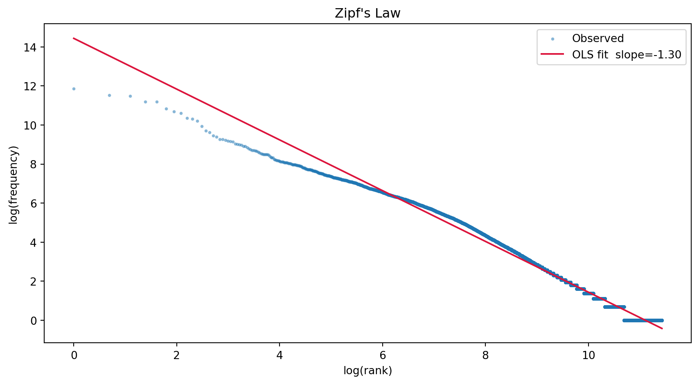
We may need to represent texts as some kind of numerical data structure that would be easier to work with. Examples include:
Document term matrix: 1 entry per token, value is number of times the word appear in a given document. We lose word order.
TF-IDF: Term Frequency–Inverse Document Frequency is a numerical statistic that reflects how characteristic a word is of a particular document within a corpus. TF captures how often a term appears in a document (more frequent in a document = more important, probably), while IDF penalizes terms that appear in many documents (appears everywhere, e.g. stop words, are not informative).
\[\text{TF-IDF}(t, d) = f_{t,d} \cdot \log\frac{N}{|\{d' : t \in d'\}|}\]
where \(f_{t,d}\) is the raw term count in document \(d\), \(N\) is the total number of documents, and the denominator counts documents containing \(t\).
This gives us a sparse vector reprezentation of documents - this means we turned a list of tokens into a number (vector).
vectorizer = TfidfVectorizer( max_features=500, stop_words="english", min_df=1, ngram_range=(1, 2),)tfidf_matrix = vectorizer.fit_transform(us["text"])feature_names = vectorizer.get_feature_names_out()print(f"TF-IDF matrix: {tfidf_matrix.shape[0]} docs × {tfidf_matrix.shape[1]} features\n")for i, row in us.head(10).iterrows(): scores = tfidf_matrix[i].toarray().flatten() top_idx = scores.argsort()[-5:][::-1] top_terms = [(feature_names[j], f"{scores[j]:.3f}") for j in top_idx]print(f" {row['speaker']} ({row['year']}): {top_terms}")
nlp = spacy.load("en_core_web_sm")def build_cooccurrence(documents, window): cooc = Counter()for doc_tokens in documents:for i, token inenumerate(doc_tokens): context = doc_tokens[max(0, i - window):i + window +1]for other in context:if other != token: pair =tuple(sorted([token, other])) cooc[pair] +=1return cooctokenized_docs = []for d in us["text"]: doc = nlp(d) tokenized_docs.append([ t.lemma_.lower() for t in docifnot t.is_stop andnot t.is_punct andlen(t.text) >2 ])cooc = build_cooccurrence(tokenized_docs, window=3)for pair, count in cooc.most_common(10):print(f" {pair[0]:20s} — {pair[1]:20s} : {count}")
states — united : 346
citizen — fellow : 236
government — people : 148
great — nation : 106
american — people : 104
peace — world : 94
nation — world : 90
people — states : 82
government — states : 82
nation — people : 82
PMI for the most frequent pairs:
states — united : PMI = +5.73
citizen — fellow : PMI = +5.59
government — people : PMI = +1.81
great — nation : PMI = +2.12
american — people : PMI = +3.12
peace — world : PMI = +3.34
nation — world : PMI = +2.24
people — states : PMI = +1.99
government — states : PMI = +1.94
nation — people : PMI = +1.26
A TF-IDF based search engine: return paper with the closest TF-IDF score as measured by cosine similarity
def lemmatize(text):return" ".join(t.lemma_ for t in nlp(text, disable=["ner", "parser"]) ifnot t.is_space)def lemmatize_batch(texts):return [" ".join(t.lemma_ for t in doc ifnot t.is_space)for doc in nlp.pipe(texts, batch_size=50, disable=["ner", "parser"]) ]ids =list(papers_text.keys())corpus = lemmatize_batch([papers_text[i] for i in ids])vectorizer = TfidfVectorizer()tfidf_matrix = vectorizer.fit_transform(corpus)vocab =set(vectorizer.vocabulary_)def query(q, k): q_lemmas = lemmatize(q).split() q_vec = vectorizer.transform([" ".join(q_lemmas)]) scores = cosine_similarity(q_vec, tfidf_matrix).flatten() top_k = np.argsort(scores)[::-1][:k]return [(ids[i], round(float(scores[i]), 4)) for i in top_k]
Hiring Discrimination
and the Task Content of Jobs:
Evidence from a Large-Scale R´esum´e Audit ∗
Sharon Braun†, Jonathan Bushnell, Zachary Cowell, David Dowling
Samuel Goldstein, Andrew Johnson, George Miller, John M. Nunley‡
R. Alan Seals§, and Mingzhou Wang¶
April 3, 2026
Abstract
We conducted a large-scale r´esum´e audit of 36,880 applications to 9,220 job advertisements
for new college graduates across the United States. Firms express task preferences through
job-advertisement text, which we...
print(papers_text[results[1][0]][0:500] +"...")
Economics of Human and AI Collaboration:
When is Partial Automation More Attractive than Full
Automation?
Wensu Li𝑎
Atin Aboutorabi𝑏
Harry Lyu𝑎
Kaizhi Qian𝑐
Martin Fleming𝑎
Brian C. Goehring𝑑
Neil Thompson𝑎∗
𝑎Massachusetts Institute of Technology
𝑏´Ecole Polytechnique F´ed´erale de Lausanne
𝑐IBM Research
𝑑IBM’s Institute for Business Value
{wensu, hlyu, marti264, neil t}@mit.edu
atin.aboutorabi@epfl.ch
kqian@ibm.com
goehring@us.ibm.com
Abstract
This paper develops a unified framework for evaluat...
Latent Dirichlet Allocation (LDA) is model that assumes each document is a mixture of latent “topics”, and each topic is a distribution over words. Given a corpus, it infers what the topics might be, and what the proportion of topics might be in each document.
tfidf_lda = TfidfVectorizer(stop_words="english", max_features=50)X_lda = tfidf_lda.fit_transform(us['text'])lda_model = LatentDirichletAllocation( n_components =3, # up to you to choose random_state =42, max_iter =30,)doc_topics = lda_model.fit_transform(X_lda)feature_names = tfidf_lda.get_feature_names_out()for topic_idx, topic inenumerate(lda_model.components_): top_words = [feature_names[i] for i in topic.argsort()[:-8:-1]]print(f"{topic_idx}: {', '.join(top_words)}")print('\n\n')for i, d inenumerate(us['text']):if i %5!=0:continue dominant = doc_topics[i].argmax() conf = doc_topics[i].max()print(f" {us['speaker'][i]} [{dominant}] ({conf:.0%})")
0: government, people, states, public, shall, country, union
1: constitution, god, know, work, war, union, interests
2: america, world, nation, new, people, freedom, today
Washington [0] (87%)
Madison [0] (87%)
Jackson [0] (88%)
Taylor [0] (86%)
Grant [0] (86%)
Harrison [0] (87%)
Taft [0] (76%)
Hoover [0] (53%)
Truman [2] (85%)
Nixon [2] (87%)
Bush [2] (86%)
Obama [2] (87%)
topic_cols = [f"topic_{k}"for k inrange(doc_topics.shape[1])]df_topics = pd.DataFrame(doc_topics, columns=topic_cols)df_topics['year'] = us['year'].valuestopic_by_year = df_topics.groupby('year')[topic_cols].mean()topic_by_year.plot(kind='area', stacked=True, figsize=(12, 5), colormap='tab10')plt.ylabel("Mean topic share")plt.title("Topic distribution over time")plt.legend(loc='upper left', bbox_to_anchor=(1, 1))plt.tight_layout()plt.show()
tsne = TSNE(n_components=2, random_state=42, perplexity=min(30, len(paper_ids)-1))coords_tsne = tsne.fit_transform(X.toarray())fig, ax = plt.subplots(figsize=(10, 7))for c inrange(3): mask = clusters == c ax.scatter(coords_tsne[mask, 0], coords_tsne[mask, 1], c=colors[c], s=100, label=f"Cluster {c}", edgecolors="white", linewidth=0.5)for i in np.where(mask)[0]: ax.annotate(paper_ids[i], (coords_tsne[i, 0], coords_tsne[i, 1]), fontsize=7, ha="center", va="bottom")ax.set_xlabel("t-SNE 1")ax.set_ylabel("t-SNE 2")ax.set_title("K-means clustering on TF-IDF representations (t-SNE)")ax.legend()plt.tight_layout()plt.show()
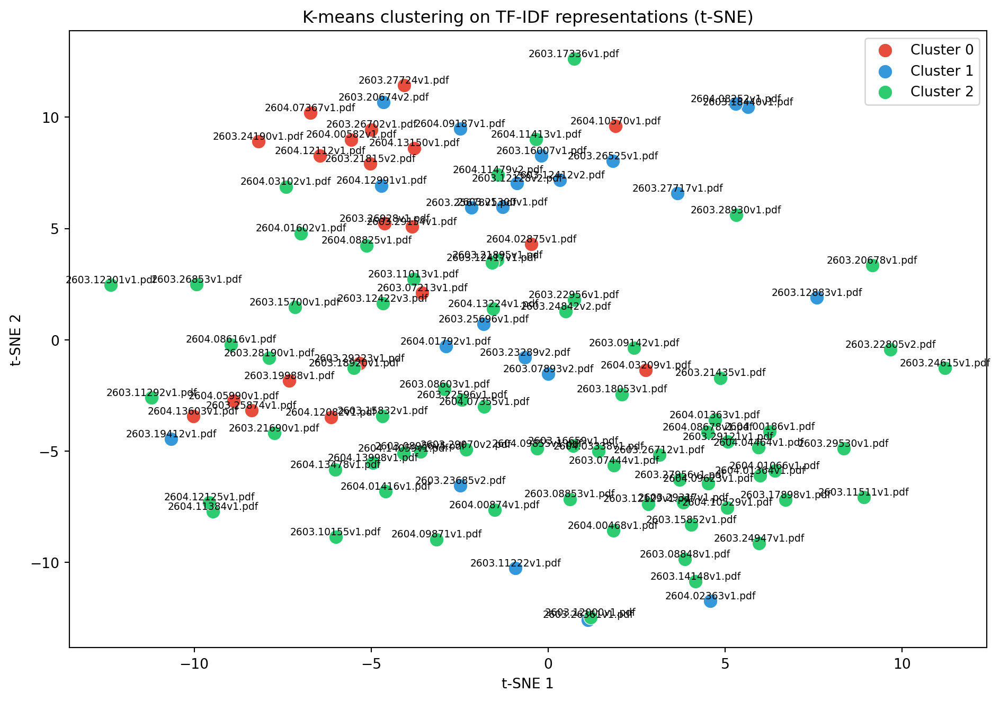
Intuitions about “AI”-based NLP
Embeddings
Through TF-IDF we have a meaningful vector representation of documents (better than raw words counts). Can we get a meaningful vector representation of words, one that captures their meaning?
By transposing the TF-IDF matrix, each row is a word, each column is a document
vec = TfidfVectorizer()M = vec.fit_transform(us["text"]) # (N_docs, V)Mt = M.T # (V, N_docs), each row is a word vectorvocab = vec.vocabulary_ # word → indexdef word_cosine(w1, w2): i, j = vocab[w1], vocab[w2]return cosine_similarity(Mt[i], Mt[j])[0, 0]word_cosine("country", "nation"), word_cosine("country", "world"), word_cosine("country", "rampart")
… is based entirely on co-occurence within a document: two words that have a similar meaning but are don’t appear together will have low similarity…
word_cosine("medicaid", "disease")
np.float64(0.0)
… and quite corpus-dependent: size of vector is just number of documents (which may be huge!).
Word embeddings compress the high-dimensional, sparse TF-IDF space into dense, low-dimensional vectors where proximity encodes semantic similarity ( “You shall know a word by the company it keeps.” — J.R. Firth, 1957)
One specific worder vector computation algorithm: Word2Vec. Given a target word, predict its context words. The hidden layer weights become the word vectors. Words in similar contexts get similar vectors.
If you want to go from words vectors to sentence/documents vectors, you might:
Average word vectors: cheap, loses word order, surprisingly effective
Use Transformer-based models trained for meaningful sentence embeddings.
all_sentences = []for text in us["text"]: words = [w.lower() for w in nltk.word_tokenize(text) if w.isalpha()] all_sentences.append(words)w2v_model = Word2Vec( sentences=all_sentences, vector_size=50, window=5, min_count=1, epochs=100, seed=42,)print(f"Vocabulary: {len(w2v_model.wv)} words, {w2v_model.wv.vector_size}-dim\n")
def word_analogy(a,b,c, model, topn =3):""" a is to b as c is to ? Uses vector arithmetic: result ≈ b - a + c """ifhasattr(model, 'wv'):return model.wv.most_similar(positive=[b, c], negative=[a], topn=topn)else:return model.most_similar(positive=[b, c], negative=[a], topn=topn)word_analogy("man", "king", "woman", w2v_model), word_analogy("man", "king", "woman", w2v_pretrained_model)
Vectors represent context similarity in the corpus, which should represent meaning similiarity in the corpus. They reflect what is said in the corpus, whatever that is:
Loading weights: 0%| | 0/103 [00:00<?, ?it/s]
Loading weights: 100%|██████████| 103/103 [00:00<00:00, 6647.48it/s]
BertModel LOAD REPORT from: sentence-transformers/all-MiniLM-L6-v2
Key | Status | |
------------------------+------------+--+-
embeddings.position_ids | UNEXPECTED | |
Notes:
- UNEXPECTED: can be ignored when loading from different task/architecture; not ok if you expect identical arch.
X = sbert.encode(us["text"].tolist())cluster_and_plot(X, "sbert")
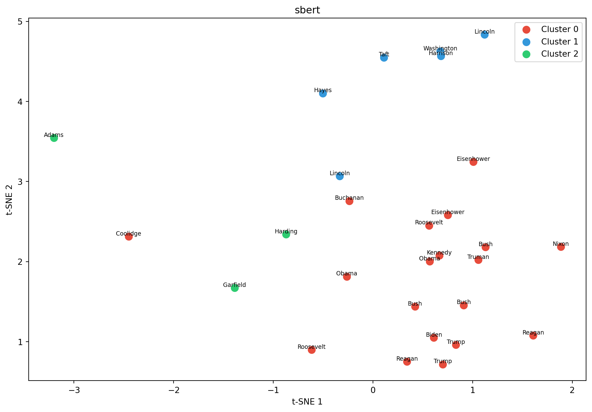
Training a language model
Autoregressive language model: given the previous tokens, we want to predict the next tokens
BPE
Transformers use subword tokenization, unlike the word == token that we have used so far.
BPE builds a vocabulary by merging frequent character pairs.
Define a target vocabulary size.
Start with individual characters (a, b, c, …), then iteratively merges the most frequent adjacent pair into a single token, repeating until a target vocabulary size is reached.
This lets the model represent common words as single tokens while handling rare or unknown words by decomposing them into smaller subword pieces.
tokenizer = Tokenizer(BPE(unk_token="[UNK]"))tokenizer.pre_tokenizer = Whitespace()trainer = BpeTrainer(vocab_size=2500, special_tokens=["[UNK]"]) # special token for unknown tokenstokenizer.train_from_iterator(us["text"], trainer=trainer)tokenized = [tokenizer.encode(t).tokens for t in us["text"]][t[:10] for t in tokenized[:3]]
Let’s say we want to predict a token using the last 5 tokens.
CONTEXT =5records_word, records_vec = [], []for tokens in tokenized: tokens = [t for t in tokens if t in vocab]for i inrange(CONTEXT, len(tokens)): ctx = tokens[i - CONTEXT : i] # 5 context tokens target = tokens[i] records_word.append(ctx + [target]) records_vec.append({"X": np.stack([w2v.wv[t] for t in ctx]), "y": w2v.wv[target], })# in "word space"cols = [f"c{i}"for i inrange(CONTEXT)] + ["target"]df_words = pd.DataFrame(records_word, columns=cols)# in "vector space"X_vec = np.stack([r["X"] for r in records_vec]) # (N, 5, 128)y_vec = np.stack([r["y"] for r in records_vec]) # (N, 128)
Prediction
So now we need to define what computations we are going to apply on the 5-context tokens to try and predict the target tokens.
For instance we may average the 5 tokens and take the closest token to this average as our prediction.
X_avg = X_vec.mean(axis=1) # compute average# compute cosine similarity: dot product divided by the normsX_norm = normalize(X_avg) W_norm = normalize(w2v.wv.vectors) cos_sim = X_norm @ W_norm.T pred_idx = cos_sim.argmax(axis=1) # prediction is most similar token# back to word spacepred_tokens = [w2v.wv.index_to_key[i] for i in pred_idx]df_words["pred"] = pred_tokensdf_words.head(15)
where \(\bar{x} \in \mathbb{R}^{128}\) is the averaged context, \(W_1 \in \mathbb{R}^{256 \times 128}\), \(W_2 \in \mathbb{R}^{V \times 256}\), and \(\hat{y} \in \mathbb{R}^V\) are logits over vocabulary.
where \(\hat{y}_{i,j}\) is the \(j\)-th logit for sample \(i\) and \(y_i \in \{1, \dots, V\}\) is the true token index.
\[\text{Perplexity} = e^{\mathcal{L}}\]
Perplexity is the “effective number of equally likely next tokens.” If PPL = 50, the model is as uncertain as if choosing uniformly among 50 candidates.
We are going to find the parameters of the layers, of which there are:
sum(p.numel() for p in mlp.parameters())
67911
through gradient descent. How does that work?
The loss function is a function of the training data and the parameters that outputs a real number. We want to find the parameters values that minimize the output of the loss function, so we only consider how \(\Lambda\) varies wrt parameters values and consider the training data as fixed.
Let’s define a function \(f(x, y)\) - two parameters, x and y - which we are going to minimize, and its gradient df.
Given our inputs \(X\), we might want to weight them by some matrix to give more weights to tokens that will be important for prediction and less to others.
Let’s start from the Gram matrix of a sequence of token embeddings
\[XX^\top\]
Each entry \((i,j)\) is the dot product of token \(i\) and token \(j\).
This tell how close in embedding space (\(\approx\) meaning, hopefully) two tokens are.
We can normalize using softmax to get weights between 0 and 1, i.e. each row is a probability distribution over all tokens, peaked on the most similar ones.
So a good weighting matrix might be \(\text{softmax}(XX^\top)\), from which we compute our weighted inputs \(\text{softmax}(XX^\top) X\)
In practice we normalize by \(1/\sqrt{d}\) to keep the inputs to softmax in a reasonable range where the distribution stays smooth and gradients flow.
The problem with this raw form is that similarity in embedding space is similarity on meaning
However we may want a broader notion of “similarity”, e.g. a verb & a noun will have different meanings/embeddings yet still be highly relevant to each other syntactically (e.g. a verb & its subject).
Consider the sentence “the cat ate the fish”
“Cat” and “ate” are dissimilar in meaning, but similar in the spaces of “noun available as subject” vs “verb looking for its subject”
To allow that we are going to project the embeddings by some weights (which we are going to learn during training): \(W_Q, W_K, W_V\) before computing the gram matrix to move from meaning to other dimensions
so let \(Q = XW_Q\), \(K = XW_K\) and \(V = XW_V\),
Temperature rescales logits before softmax: p_i = softmax(z_i / T)
prompt ="My fellow americans, "seed_ids = tokenizer.encode(prompt).idsseed_idx = torch.tensor([seed_ids], dtype=torch.long, device=device)for temp in [0.1, 0.5, 1.5]: out = model.generate(seed_idx.clone(), max_new_tokens=80, temperature=temp) ids = out[0].tolist() text = tokenizer.decode(ids)print(f"T={temp}: {text}\n")
T=0.1: My fellow americans , and the world , and the world , and the world , and the world , and the world , and the world . The world is a new century , and the world ' s is a new century , and we have the world . We have no longer be done , and we have the world . We have not , and we have the world . We have the world , and we have no longer
T=0.5: My fellow americans , and the people of the world ' s people , that we can not do not to the world , but we are to it , we have the world . We have to the world . We have a new task , and we must not do , and by the general and fight to the world , and you , and God . We have a new act of the people , we have been long as we
T=1.5: My fellow americans , and are doing certain independent President millions them treasures on either that embraced questions heartily and singular undisturbed if useful o raween invely now unknown shows a nation . These purpose of a trained invariably Iâ economy passion let us we learned in privileges must have done dependent . Even on righteousness part already completed legislation seeking against the complaplaced by annual prness in freedom incidental after so long thoughtfully approval of enemies care will regions
# Synthetic data to illustrate the techniquefemale_words = ["sérieuse", "exemplaire", "persévérer", "appliquée", "studieuse","difficultés", "fragilités", "failles", "hésitations", "découragée","irréprochable", "confiance", "bravo", "efforts", "sérénité"]male_words = ["intuition", "passion", "curiosité", "idées", "aisance","brouillon", "dilettante", "désinvolture", "puéril", "agité","s'amuse", "superficiel", "endormi", "inexploité", "réveil"]neutral_words = ["travail", "résultats", "trimestre", "niveau", "progrès"]def generate_report(sex, n=300): words = []if sex =="female": words += np.random.choice(female_words, size=4, replace=True).tolist() words += np.random.choice(male_words, size=1, replace=True).tolist()else: words += np.random.choice(male_words, size=4, replace=True).tolist() words += np.random.choice(female_words, size=1, replace=True).tolist() words += np.random.choice(neutral_words, size=3, replace=True).tolist() np.random.shuffle(words)return" ".join(words)n_students =500sexes = np.random.choice(["female", "male"], size=n_students)reports = [generate_report(s) for s in sexes]y = (sexes =="female").astype(int)vectorizer = CountVectorizer(max_features=200)X = vectorizer.fit_transform(reports)clf = LogisticRegression( penalty="l1", # lasso C=0.5, solver="liblinear", random_state=42 )scores = cross_val_score(clf, X, y, cv=5, scoring="accuracy")print(f"Gap: +{(scores.mean()-0.5)*100:.1f} pp")# Visualise the most predictive wordsclf.fit(X, y)feature_names = vectorizer.get_feature_names_out()coefs = pd.Series(clf.coef_[0], index=feature_names).sort_values()top_male = coefs.head(8) # negative coef → maletop_female = coefs.tail(8) # positive coef → femaletop = pd.concat([top_male, top_female])colors = ["#2c7bb6"if c <0else"#d7191c"for c in top]fig, ax = plt.subplots(figsize=(9, 5))top.plot(kind="barh", color=colors, ax=ax, edgecolor="white")ax.axvline(0, color="black", linewidth=0.8)ax.set_xlabel("LASSO coefficient (negative → boys, positive → girls)")ax.set_title("Most predictive words for sex classification in report cards")blue_patch = mpatches.Patch(color="#2c7bb6", label="Boys")red_patch = mpatches.Patch(color="#d7191c", label="Girls")ax.legend(handles=[blue_patch, red_patch])plt.tight_layout()plt.show()
Gap: +50.0 pp
/opt/python/lib/python3.13/site-packages/sklearn/linear_model/_logistic.py:1135: FutureWarning: 'penalty' was deprecated in version 1.8 and will be removed in 1.10. To avoid this warning, leave 'penalty' set to its default value and use 'l1_ratio' or 'C' instead. Use l1_ratio=0 instead of penalty='l2', l1_ratio=1 instead of penalty='l1', and C=np.inf instead of penalty=None.
warnings.warn(
/opt/python/lib/python3.13/site-packages/sklearn/linear_model/_logistic.py:1160: UserWarning: Inconsistent values: penalty=l1 with l1_ratio=0.0. penalty is deprecated. Please use l1_ratio only.
warnings.warn(
/opt/python/lib/python3.13/site-packages/sklearn/linear_model/_logistic.py:1135: FutureWarning: 'penalty' was deprecated in version 1.8 and will be removed in 1.10. To avoid this warning, leave 'penalty' set to its default value and use 'l1_ratio' or 'C' instead. Use l1_ratio=0 instead of penalty='l2', l1_ratio=1 instead of penalty='l1', and C=np.inf instead of penalty=None.
warnings.warn(
/opt/python/lib/python3.13/site-packages/sklearn/linear_model/_logistic.py:1160: UserWarning: Inconsistent values: penalty=l1 with l1_ratio=0.0. penalty is deprecated. Please use l1_ratio only.
warnings.warn(
/opt/python/lib/python3.13/site-packages/sklearn/linear_model/_logistic.py:1135: FutureWarning: 'penalty' was deprecated in version 1.8 and will be removed in 1.10. To avoid this warning, leave 'penalty' set to its default value and use 'l1_ratio' or 'C' instead. Use l1_ratio=0 instead of penalty='l2', l1_ratio=1 instead of penalty='l1', and C=np.inf instead of penalty=None.
warnings.warn(
/opt/python/lib/python3.13/site-packages/sklearn/linear_model/_logistic.py:1160: UserWarning: Inconsistent values: penalty=l1 with l1_ratio=0.0. penalty is deprecated. Please use l1_ratio only.
warnings.warn(
/opt/python/lib/python3.13/site-packages/sklearn/linear_model/_logistic.py:1135: FutureWarning: 'penalty' was deprecated in version 1.8 and will be removed in 1.10. To avoid this warning, leave 'penalty' set to its default value and use 'l1_ratio' or 'C' instead. Use l1_ratio=0 instead of penalty='l2', l1_ratio=1 instead of penalty='l1', and C=np.inf instead of penalty=None.
warnings.warn(
/opt/python/lib/python3.13/site-packages/sklearn/linear_model/_logistic.py:1160: UserWarning: Inconsistent values: penalty=l1 with l1_ratio=0.0. penalty is deprecated. Please use l1_ratio only.
warnings.warn(
/opt/python/lib/python3.13/site-packages/sklearn/linear_model/_logistic.py:1135: FutureWarning: 'penalty' was deprecated in version 1.8 and will be removed in 1.10. To avoid this warning, leave 'penalty' set to its default value and use 'l1_ratio' or 'C' instead. Use l1_ratio=0 instead of penalty='l2', l1_ratio=1 instead of penalty='l1', and C=np.inf instead of penalty=None.
warnings.warn(
/opt/python/lib/python3.13/site-packages/sklearn/linear_model/_logistic.py:1160: UserWarning: Inconsistent values: penalty=l1 with l1_ratio=0.0. penalty is deprecated. Please use l1_ratio only.
warnings.warn(
/opt/python/lib/python3.13/site-packages/sklearn/linear_model/_logistic.py:1135: FutureWarning: 'penalty' was deprecated in version 1.8 and will be removed in 1.10. To avoid this warning, leave 'penalty' set to its default value and use 'l1_ratio' or 'C' instead. Use l1_ratio=0 instead of penalty='l2', l1_ratio=1 instead of penalty='l1', and C=np.inf instead of penalty=None.
warnings.warn(
/opt/python/lib/python3.13/site-packages/sklearn/linear_model/_logistic.py:1160: UserWarning: Inconsistent values: penalty=l1 with l1_ratio=0.0. penalty is deprecated. Please use l1_ratio only.
warnings.warn(
Measure “corporate culture” through vocabulary in earnings reports
Take a specific cultural trait, e.g. “teamwork”
Choose a set of related words, here: collaboration, collaborative, cooperate, cooperation, cooperative
Define the dictionary of “teamwork”-related words as the 500 words closest to the average word in the set as measured by cosine similarity
In each earning compute the TF-IDF scores of those words -> high “teamwork”-words TF-IDF score = firm probably values team work
Define “strong culture” as “Strong culture is an indicator variable that takes the value of one if the sum of a firm’s five cultural values is in the top quartile across all Compustat firms in a year, and zero otherwise.”
What do Americans spontaneously think about when asked about taxes? i.e. not with closed questions
Open-ended survey responses cluster around fairness, government trust, loopholes.
Partisan gaps
In the paper, topic words are hand picked by researches, but one could use LDA to not specify topics in advances
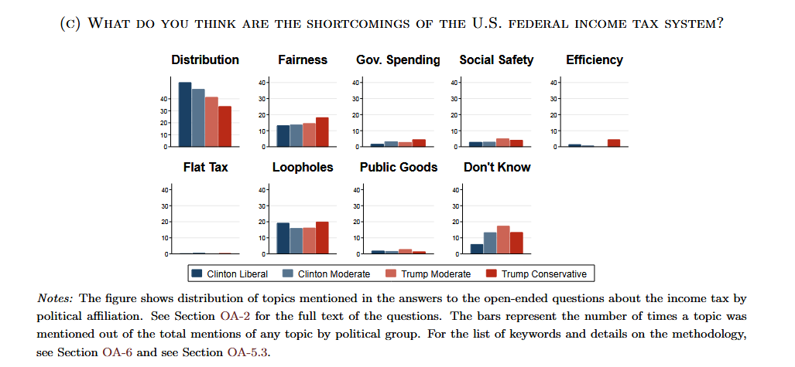
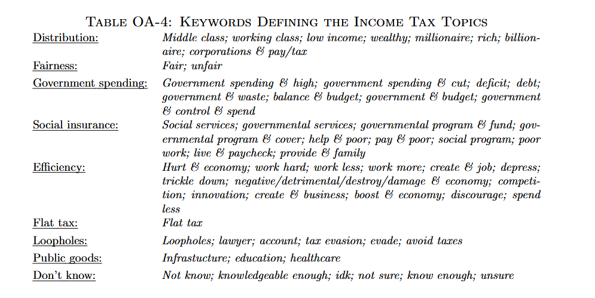
survey_responses = ["The rich should pay more it's not fair that billionaires pay less than workers","Government wastes our money on programs that don't work","Companies use loopholes and offshore accounts to avoid taxes entirely","I worry about social security and healthcare being cut to fund tax breaks","Fairness is the most important principle taxes should be equal for everyone","Too much bureaucracy in the tax system it's too complicated to file","Wealthy people hire lawyers to avoid taxes while regular people pay full rate","Trust in government is low I don't know where my money goes","Tax cuts for corporations don't create jobs they just enrich shareholders","The estate tax is unfair families should not lose their farm to inheritance taxes","Hard working people are penalized while those who cheat the system benefit","Congress needs to close loopholes and make the system simpler and transparent","Hedge fund managers pay lower rates than nurses because of capital gains loopholes that's backwards","The top one percent owns more than the bottom fifty but somehow always gets the bigger tax break","Stock buybacks should be taxed the same as dividends companies use them to dodge obligations","I pay taxes every year and watch it disappear into contractors and consultants with nothing to show","Foreign aid and bloated agencies get funded while local roads and schools fall apart","Audits hit small businesses and middle class families while corporations get away with anything","The tax code is thousands of pages long written by lobbyists for lobbyists not regular citizens","I spent four hours on my return for a refund of sixty dollars something is deeply broken","Why do I need to pay someone to tell the government what it already knows from my employer","Self employed people pay double the social security tax that's a penalty for working for yourself","I follow every rule and still owe money at the end of the year while big companies pay nothing","My neighbor opened an LLC and suddenly deducts everything meanwhile I get nothing","A flat tax sounds fair until you realize ten percent means nothing to a billionaire and everything to me","Automatic filing like other countries do would save billions in wasted time and compliance costs","We need real time reporting and public disclosure not self reported honor system accounting","Roads schools firefighters none of that is free someone has to pay and it should be proportional","I don't mind paying taxes if I could see the results but the connection between payment and service is invisible","Other countries get healthcare and transit from their taxes we get wars and bank bailouts",]vectorizer = CountVectorizer(stop_words="english", min_df=1)dtm = vectorizer.fit_transform(survey_responses)vocab = vectorizer.get_feature_names_out()lda = LatentDirichletAllocation(n_components=2, random_state=42, max_iter=200)lda.fit(dtm)print("Top words per topic:\n")for comp in lda.components_: top_words = [vocab[j] for j in comp.argsort()[-6:][::-1]]print(f"{', '.join(top_words)}\n\n")
Top words per topic:
don, tax, taxes, government, companies, money
pay, tax, taxes, people, fund, social

Social science applications
Gendered school reports
Do French teachers use different vocabulary to describe boys and girls at the same academic level?
Can the sex of a student be predicted from the words used in their report card, after controlling for performance?
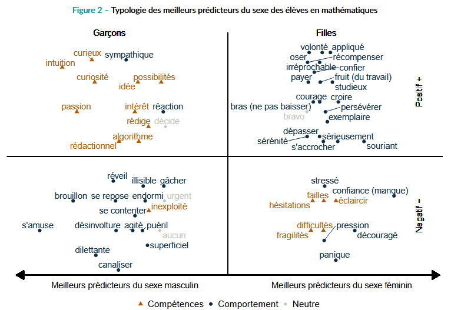
.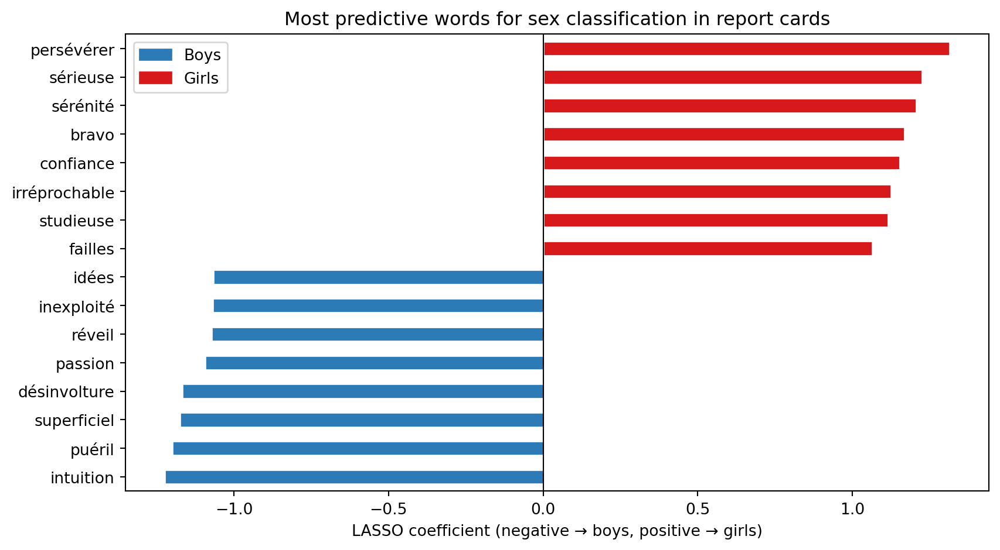
Embeddings
https://github.com/prodriguezsosa/EmbeddingRegression
https://doi.org/10.1017/S0003055422001228
Compute embeddings of the same word in different contexts
Fit the regression \(Embeddings = \alpha + \beta Covariates + \epsilon\)
Can do hypothesis testing about how embeddings vary depending on covariates
Do Republicans and Democrats use the same words to mean different things?
Can we quantify partisan divergence in how concepts are framed? This is a different question from word frequency!
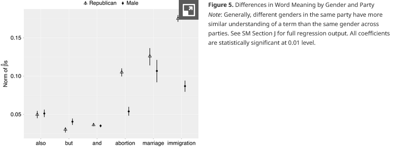
.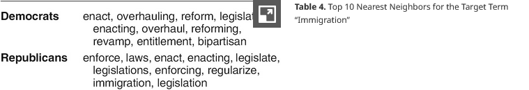
.Vocabulary Comparison
https://github.com/MS20190155/Measuring-Corporate-Culture-Using-Machine-Learning?tab=readme-ov-file
https://papers.ssrn.com/sol3/papers.cfm?abstract_id=3256608
Measure “corporate culture” through vocabulary in earnings reports
Take a specific cultural trait, e.g. “teamwork”
Choose a set of related words, here: collaboration, collaborative, cooperate, cooperation, cooperative
Define the dictionary of “teamwork”-related words as the 500 words closest to the average word in the set as measured by cosine similarity
In each earning compute the TF-IDF scores of those words -> high “teamwork”-words TF-IDF score = firm probably values team work
Named Entity Recognition (NER)
https://minio.lab.sspcloud.fr/ssphub/diffusion/website/2025-12-network/2_JOCAS_DARES.pdf
From DARES (French Labor Statistical institute)
Collect online job postings
Train model to dectect tokens about digital skills based on human annotation to predict for out of sample tokens
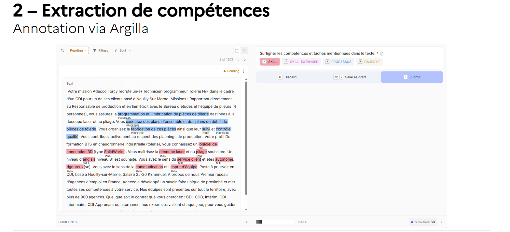
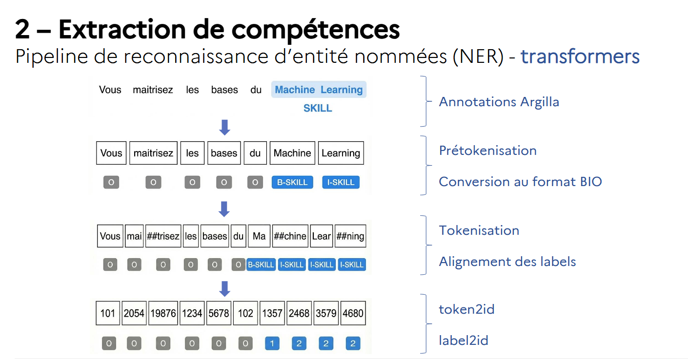
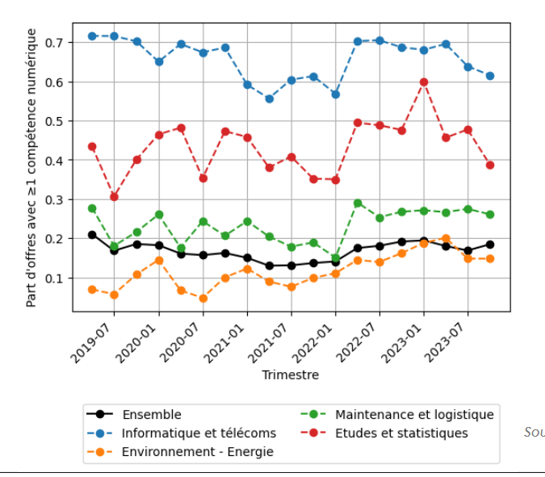